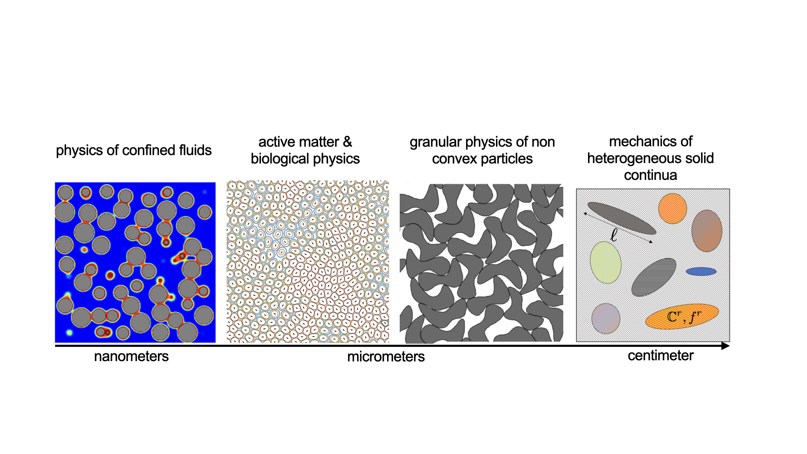

Research

Active matter & Biological Physics
Understanding how multi-cellular life emerges from a single cell is yet to be fully understood. This processes is a highly orchestrated process where cell can collectively form dynamic patterns without any central guidance. I develop theoretical and high performance computational models to decipher the complex interplay of nonequilibrium statistical physics of living cells with biological functions accounting for various sources that drive a living system away from equilibrium.

Physics of confined fluids & capillary phase transition
The behavior of bulk fluid contrast significantly with that of a confined fluid. This is a consequence of pore morphology, topology and the strength of fluid-solid interactions that alter the energy landscape of a fluid. The effect of confinement on fluid behavior is of interest for a range of scientific and engineering applications. I develop high performance computational models to study this phenomane accounting for various sources of structural and/or materials disorder.

Granular physics
Granular matter are one of the most ubiquitous materials on earth. The interplay of a particle shape; packing characteristics and its physical behavior is not fully deciphered. I am interested in understanding how topology of a particle can give rise to very interesting collective behavior not typically associated with classical - convex shaped - granular matter.

Mechanics highly heterogeneous solids
Continuum based modeling approaches have limited capabilities to capture the spatial distribution of solid constituents and their mechanical interactions. Primarily built on Eshelby's inclusion problem and mean-field based homogenization methods, continuum micromechanics approaches reduce the spatial distribution of the solid constituents and their mechanical interactions to effective fields. Furthermore, perturbation based solutions in statistical continuum mechanics are limited to small fluctuations in mechanical properties and thus unable to capture heavy-tailed distributions characteristics of highly heterogeneous media. For these materials with the length scale of observation often on par with that of the inclusions, defining a representative elementary volume that satisfies scale separability - a requirement for any continuum approach - becomes an impractical task. In this vein, we developed a discrete theoretical and computational framework that addresses the limitations encountered in the continuum approach.